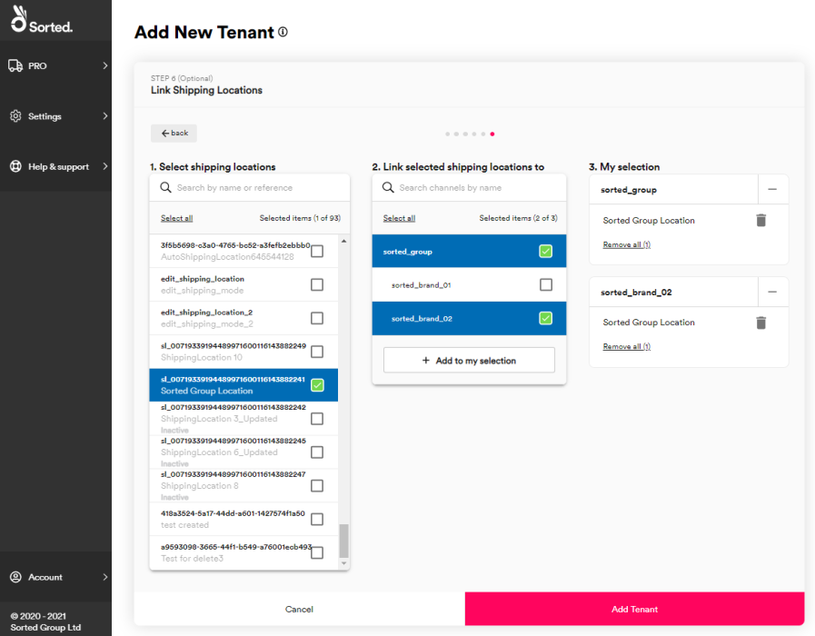

Managing Tenants and Channels
Multi-tenancy enables you to set up tenants and channels (that is, multiple sub-companies or brands) within your main Sorted account. This page explains how to use the Multi-tenancy page to set up and manage tenants and channels.
[!include[_development_statement](../pro/api/includes/_development_statement.md)]Multi-Tenancy Overview
Within the Sorted platform, a tenant is a sub-company that exists within a customer account. Tenants can be further divided into channels, which are analogous to brands or smaller companies. Tenants and channels can have their own carrier services, carrier accounts, shipping locations, and users, enabling the platform to support complex retail operations in which each of a customer's brands operates as essentially a separate entity.
For example, suppose that a clothing company group called ABC Limited becomes a Sorted customer. ABC Limited consists of three separate companies:
- Aunty Mabel Co – a clothing brand selling high value items to a more mature audience.
- Billy Bob's Apparel – a clothing brand selling work wear.
- City Stocks – a clothing brand with two “child brands”.
- City Bespoke Clothing.
- City Hats and Shoes.
In this example, ABC Limited would create tenants for each of their three sub-companies from their parent account. Within the City Stocks tenant, they would also create two channels. Channels are added as part of the tenant creation process.
You can manage your tenants and channels in the Sorted Portal via the Managing Tenants page. To access the Managing Tenants page, select Settings > Multi-tenancy from the main menu.
Viewing Tenants
To view your tenants, select the Managing Tenants page, and ensure that the Tenants tab is selected.
The Managing Tenants page displays a tile for each of your tenants. From here, you can use the Active / Inactive toggle to deactivate and reactivate tenants as required, or select Edit to edit the tenant's details.
The process of editing an existing tenant is the same as that used to set up a new tenant, as explained in the Adding a New Tenant section of this page.

Viewing Channels
To view your channels, select the Managing Tenants page, and click the Channels tab. The Channels tab displays a table of your existing channels, including their associated Tenant Name and the number of Users, Carrier Services, Carrier Account Configurations, and Shipping Locations that that channel has.
From here, you can use the Enable / Disable toggle to deactivate and reactivate channels as required, or select Edit to edit the channel details.
The process of editing an existing channel is the same as that used to set up a new channel, as explained in the Adding a New Channel section of this page.
Adding a New Tenant
To add a new tenant, select the Managing Tenants page and click the Add New Tenant card from the Tenants tab. The system displays the Add New Tenant page.
Step 1: Adding Tenant Details
The Tenant Details card enables you to enter identifying information about your new tenant
- Add a Name. This is a unique identifier for the tenant, and must be between three and 50 characters long.
- Optionally, add a tenant Description of up to 100 characters.
- Click Next to display the Add Channels card
Step 2 (Optional): Adding Channels
The Add Channels card enables you to add channels to your new tenant. If you do not want to add channels to your tenant, click Next to display the Link Users card.
To add a channel:
- Add a Name. This is a unique identifier for the channel, and must be between three and 50 characters long.
- Optionally, add a channel Description of up to 100 characters.
- Click Add to Channel List to add the channel to the tenant's Channel List
Once you have entered the channels you need, click Next to display the Link Users card.
Step 3: Linking Users
The Link Users card enables you to to link users to your tenant and its channels. Users cannot access a tenant or channel unless they have been linked to it.
For example, a customer working with a system integration may create a "system" user and restrict that user so that they can only create shipments for a specific tenant.
To link users:
- Select a user or users from the Select users menu.
- Select the tenant and channels that you want to link those users to from the Link selected users to menu.
- Click Add to my selection to link the selected users to the selected tenant and channels. The system adds your selection to the My selection list.
In the example image above, Default Users 1 and 3 have been granted access to the sorted_brand_02 channel within the sorted_group tenant.
Note
For more information on configuring users, see the Managing Users and Roles page.
Once you have finished linking your users, click Next to display the Link Carrier Services card.
Step 4: Linking Carrier Services
The Link Carrier Services card enables you to to link carrier services to your tenant and its channels.
To link carrier services:
- Select one or more carrier services from the Select carrier services menu.
- Select the tenant and channels that you want to link those services to from the Link selected carrier services to menu.
- Click Add to my selection to link the selected services to the selected tenant and channels. The system adds your selection to the My selection list.
In the example image above, Carrier Services 2 and 6 have been granted access to the sorted_brand_02 channel within the sorted_group tenant.
Note
For more information on managing carrier services, see the Managing Carrier Services page.
Once you have finished linking your carrier services, click Next to display the Link Carrier Account Configuration card.
Step 5: Link Carrier Account Configurations
The Link Carrier Account Configuration card enables you to to link carrier account configurations to your tenant and its channels.
To link carrier account configurations:
- Select one or more account configurations from the Select carrier account configuration menu.
- Select the tenant and channels that you want to link those account configurations to from the Link selected carrier account configurations to menu.
- Click Add to my selection to link the selected account configurations to the selected tenant and channels. The system adds your selection to the My selection list.
In the example image above, Carrier Account Configurations 2 and 6 have been granted access to the sorted_brand_02 channel within the sorted_group tenant.
Once you have finished linking your account configurations, click Next to display the Link Shipping Locations card.
Step 6: Link Shipping Locations
The Link Shipping Location card enables you to to link shipping locations to your tenant and its channels.

To link shipping locations:
- Select one or more shipping locations from the Select shipping locations menu.
- Select the tenant and channels that you want to link those shipping locations to from the Link selected shipping locations to menu.
- Click Add to my selection to link the selected shipping locations to the selected tenant and channels. The system adds your selection to the My selection list.
In the example image above, Sorted Group Location has been granted access to the sorted_brand_02 channel within the sorted_group tenant.
Note
For more information on configuring shipping locations, see the Managing Shipping Locations page.
Finally, select Add Tenant to create your tenant and close the Add New Tenant page.
Adding a New Channel
As well as creating new channels during the tenant creation process, you can also create new channels directly by clicking Add new channels on the Channels tab of the Managing Tenants page.
The process of creating a new channel is largely the same as the process of creating a new tenant, with one exception: instead of a Tenant Details card the Add New Channels page displays a Choose Tenant card from which you can select the tenant that you want your new channel to be associated with.
Select the tenant and click Next to display the Add Channels card. The rest of the process is the same as that detailed in the Adding a New Tenant section.